步骤 1
添加文件。或者整个文件夹。
选择单个文件、含子文件夹的整个文件夹，或把所有内容拖进窗口。AutoPress 从 front matter、第一个标题或文件名读取标题，并自动找到特色图片。
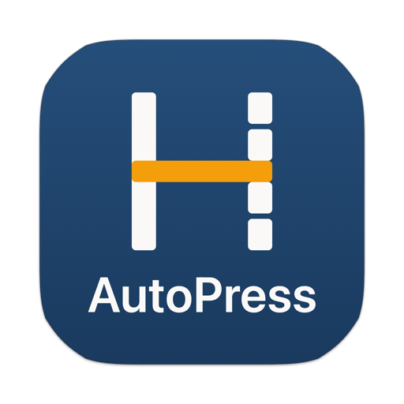
适用于 iPhone、iPad 和 Mac
Hybrid AutoPress 一次把许多 Markdown 文件上传到 WordPress。每个文件成为一篇文章或一个页面，保留标题、链接、列表、表格和图片，可存为草稿、立即发布或定时发布。
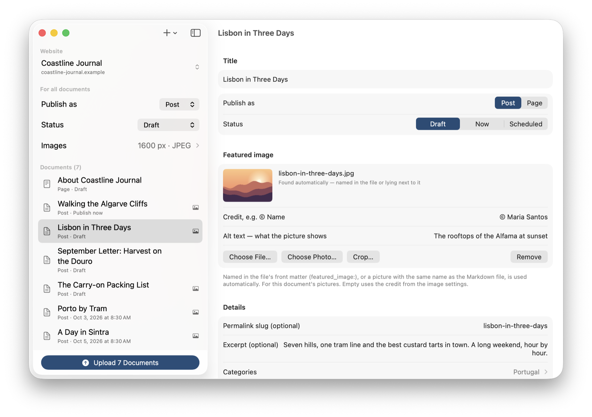
步骤 1
选择单个文件、含子文件夹的整个文件夹，或把所有内容拖进窗口。AutoPress 从 front matter、第一个标题或文件名读取标题，并自动找到特色图片。
步骤 2
文章还是页面；草稿、立即发布还是定时：为所有文稿设置一次，再对任意一篇单独修改。整批可以错开时间，第一篇在某个日期，其余每天一篇。在有内容立即上线之前，AutoPress 会确认一次。
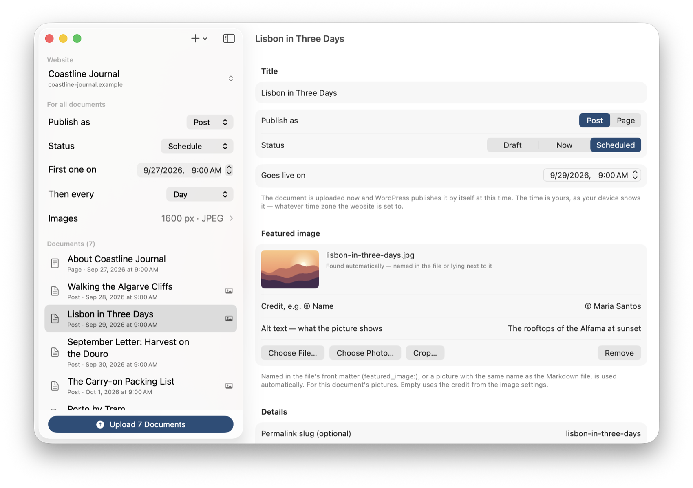
步骤 3
文稿一篇接一篇在 WordPress 中创建，图片先行。进度条显示进展，随时可以停止；已上传的内容保持不变。
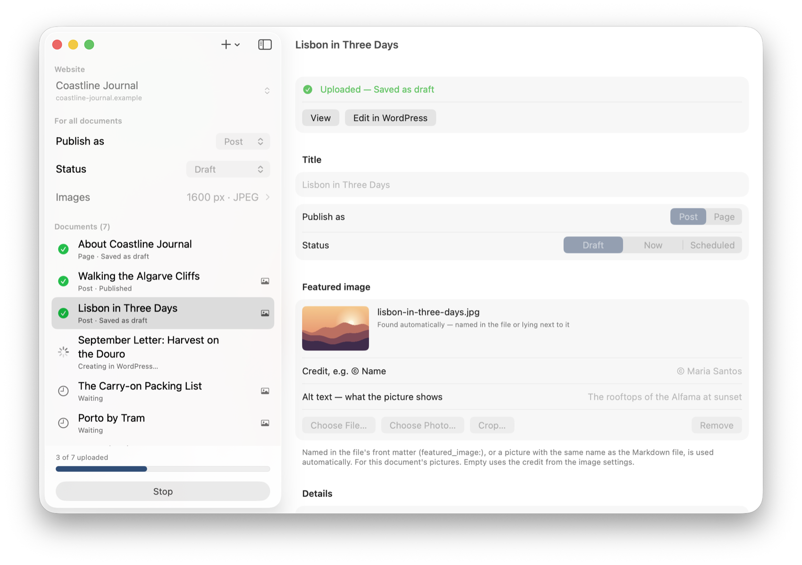
步骤 4
每篇完成的文稿都有绿色对勾，以及在网站上查看或在 WordPress 中继续编辑的链接。如果出错，AutoPress 会告诉你原因和解决办法，并在下次重新发送。
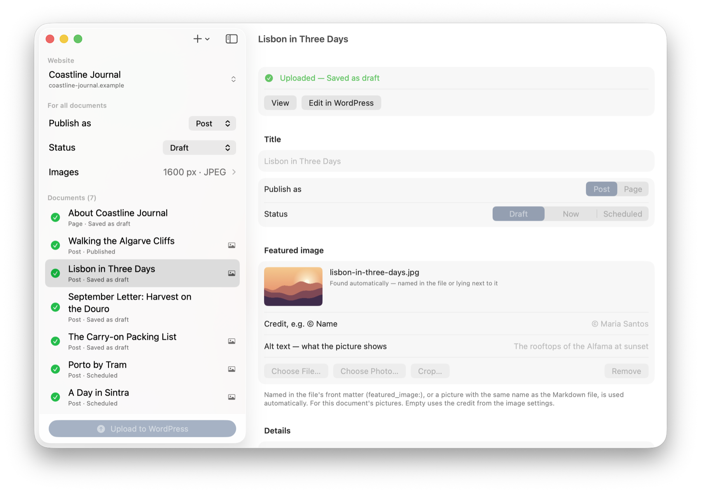
送达的内容
你的 Markdown 以 WordPress 区块编辑器的区块形式送达，而不是一个无法拆分的大块。每个标题、段落、列表、引用、表格和图片都是独立区块，可以单独编辑、移动或删除。
图片
再也不用手动上传图片、修补链接。Markdown 文件旁边的图片会随之进入 WordPress：缩放到网页尺寸，按你的意愿裁剪，角落里加上你的名字。
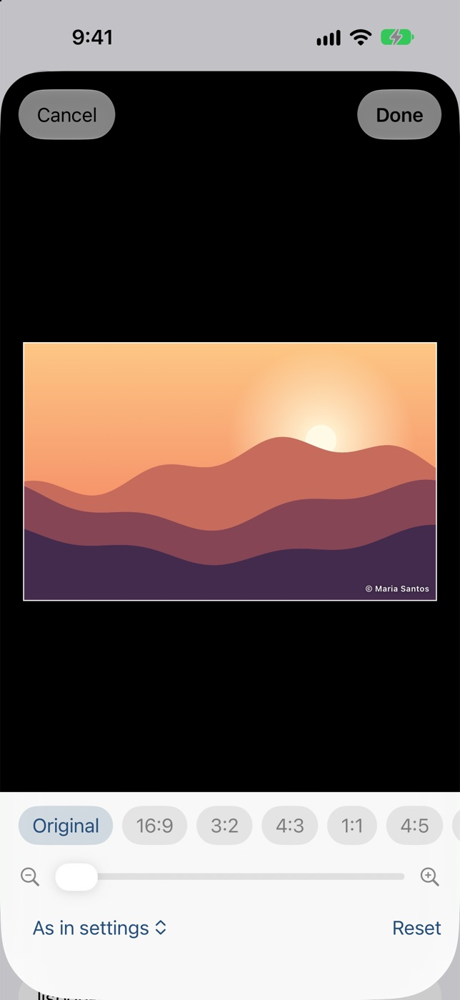
定时发布
五十篇文稿不必同一天出现。现在上传，让 WordPress 在你选定的时间自动发布。
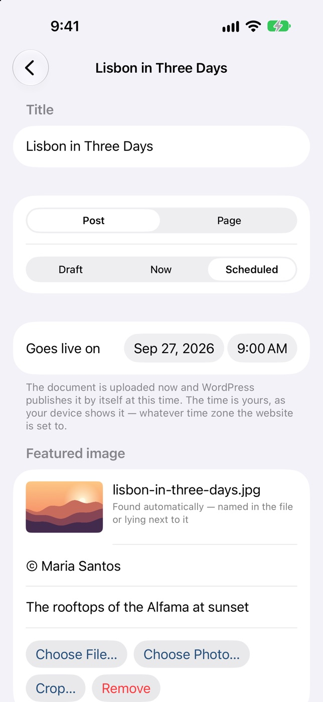
元数据与搜索引擎
没有任何东西是为某个特定安装量身定制的。AutoPress 询问每个网站有什么，并且只显示这些。
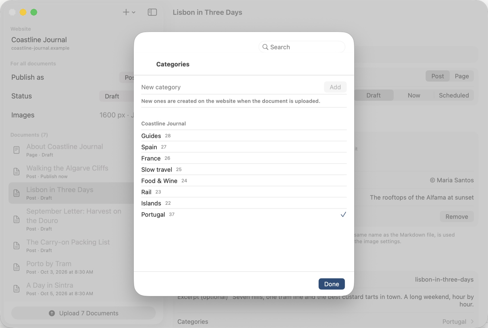
一个 App，三种设备
iPhone、iPad 和 Mac 上是同一个 App，一次购买三处可用。从文件所在的任何地方上传：iCloud 云盘、“文件”App 或 Mac 上的文件夹。
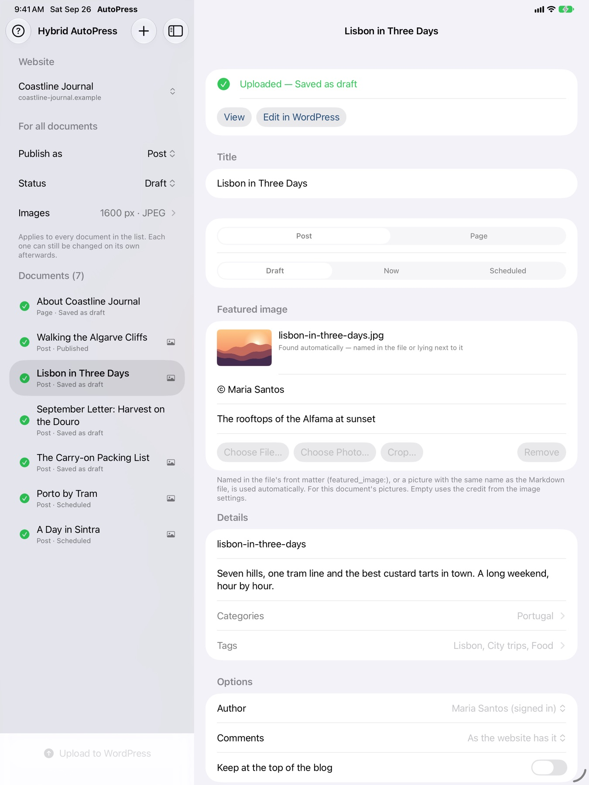
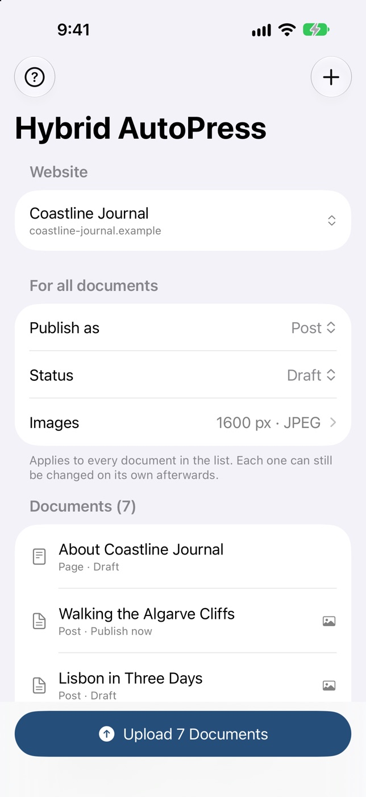
Front matter
可选的 front matter，就像 Jekyll、Hugo 和 Obsidian 写的那样，逐个文件控制一切。没有它，第一个标题就成为文章标题，且不会在正文中重复出现。文件中的一切只是初始值，在 App 中仍可修改。
--- # 可选：任何一行都可以省略 title: Lisbon in Three Days type: post status: scheduled date: 2026-10-03 08:30 slug: lisbon-in-three-days tags: [Lisbon, City trips, Food] categories: Portugal featured_image: images/alfama.jpg credit: © Maria Santos seo_title: Lisbon in Three Days: An Itinerary meta_description: Seven hills, one tram line, the best custard tarts. --- # Lisbon in Three Days Lisbon rewards people who walk …
你的 WordPress
通过浏览器登录，WordPress 自己就会为 App 创建一个应用程序密码。你的登录密码永远不会传给 AutoPress，访问权限可随时在个人资料中撤销。WordPress.com 网站以同样方式连接。任何可通过 https 访问的 WordPress 5.6 或更高版本。
从不放在设置里，从不放在文件中。只通过 https 连接网站；未加密的连接不会发送任何内容。
如果你的服务器吞掉了登录信息（共享主机上很常见），AutoPress 会识别出来，并显示能解决问题的 .htaccess 行。挡路的安全插件会被点名。
无需账户，没有跟踪，没有中间服务器。文稿和图片从你的设备直接到你的 WordPress。
从第一步到故障排除的十四个简短主题，覆盖全部九种语言，此外在需要的地方都有提示：字段下方、登录时、每条错误旁。
AutoPress Pro
安装后七天内一切可用，无需账户，无需支付信息。之后由按月或按年的 AutoPress Pro 订阅继续保持；价格见 App Store。没有订阅，App 以免费版继续运行。
| 免费 | AutoPress Pro |
|---|---|
| 一次一篇文稿 | 一次任意数量的文稿 |
| 图片以原始尺寸 JPEG 上传 | 缩放到网页尺寸，JPEG 或 WebP |
| 草稿或立即发布 | 另加定时发布，整批错开 |
| 文章或页面、特色图片、裁剪、署名 | 另加详情、选项、SEO 字段和网站自身的字段 |
免费版不会发送锁定的字段，即使 Markdown 文件设置了它们；定时的文稿会变成草稿，绝不会意外公开。订阅通过 App Store 进行，可随时在那里取消。
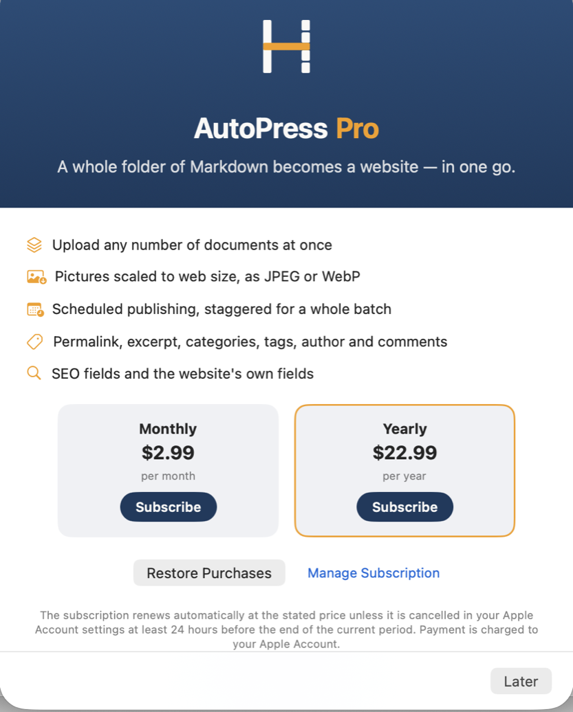
你能得到什么
二十篇文章不再意味着二十次复制、粘贴、上传图片、修复链接、选择分类。添加文件夹，按下上传。
一切都可以先作为草稿送达。在 WordPress 中检查，满意后再发布。
磁盘上的 Markdown 文件仍是原件，任何编辑器都能读取，今天如此，十年后也如此。
来自 ChatGPT、Claude 等的文本本来就是 Markdown。AutoPress 把它们直接送上你的网站。
搬家或新建网站？页面和文章一次全部上传，连同标签、分类和图片。